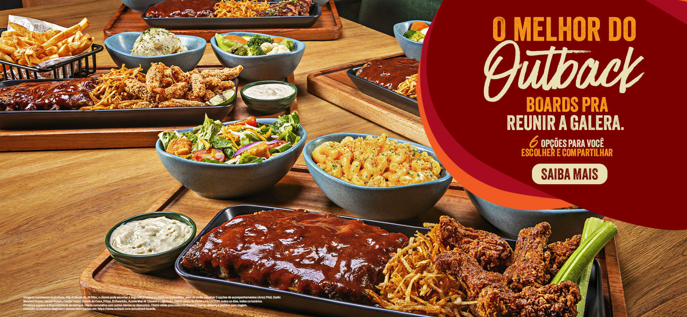
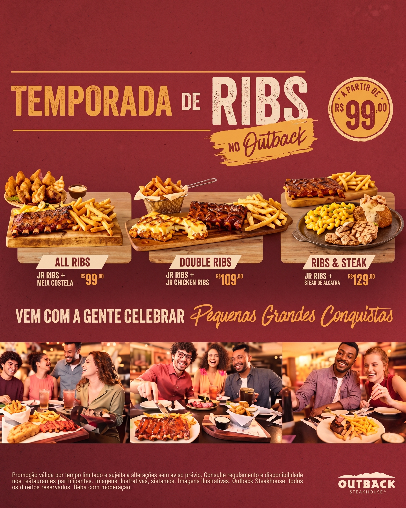
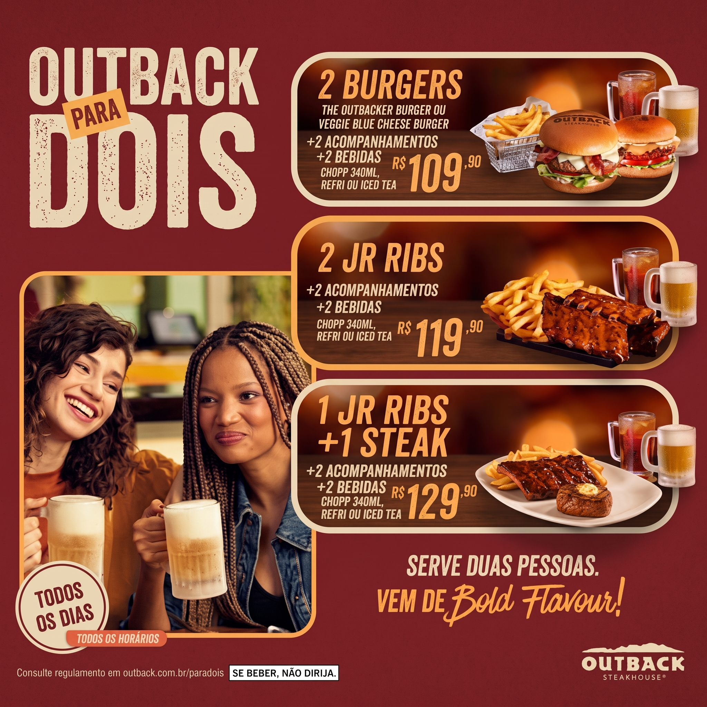
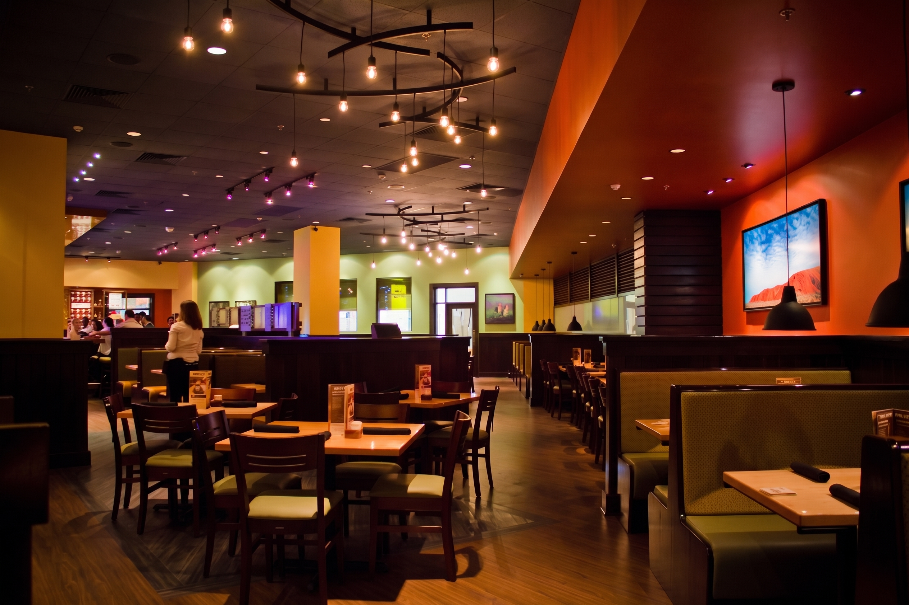
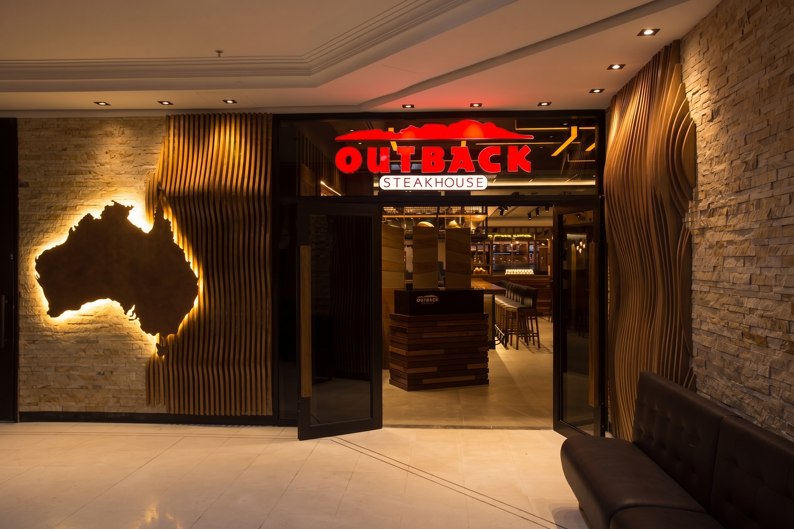
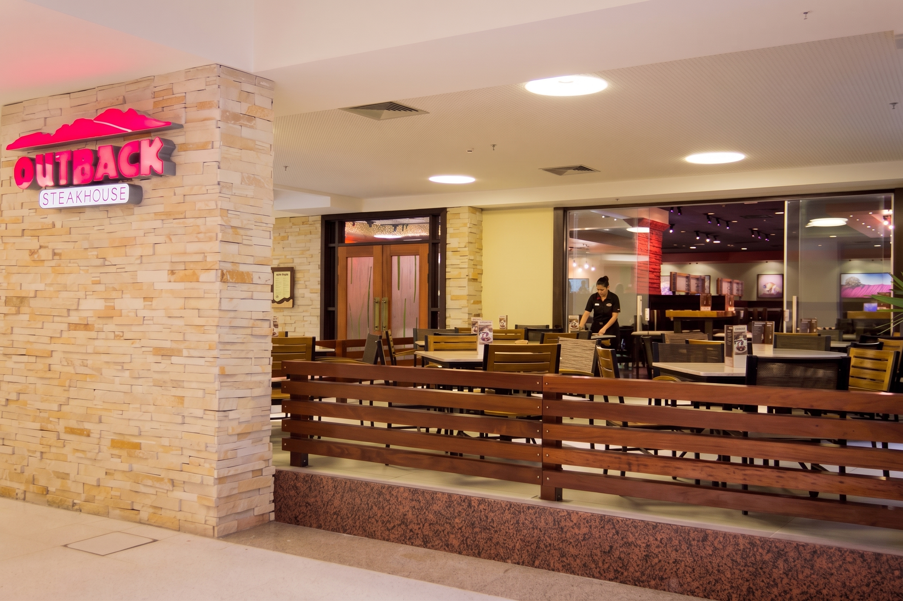

Outback
Inspirado no espírito aventureiro da Austrália, o Outback Steakhouse é muito mais do que um restaurante: é uma experiência. Somos reconhecidos mundialmente por nossos cortes de carne de alta qualidade, sabores marcantes e uma atmosfera descontraída. Do nosso tradicional pão australiano à famosa Bloomin' Onion, nosso compromisso é oferecer porções generosas e um atendimento caloroso para que cada visita seja inesquecível.


Unidades

Av. República do Líbano, 251 - Piso L1 - Pina, Recife - PE, 51110-160

Av. Governador Agamenon Magalhães, 153 - Loja 33 Pavimento 01, Santo Amaro - Recife/PE

Rua Padre Carapuceiro, 777 Piso Padre Carapuceiro LUC PC 325 - Boa Viagem, Recife - PE, 51020-900